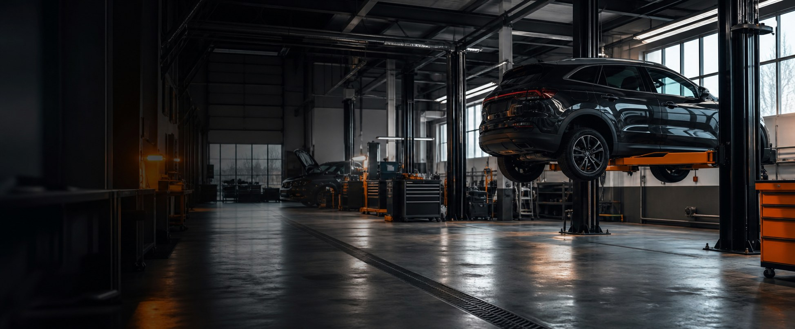
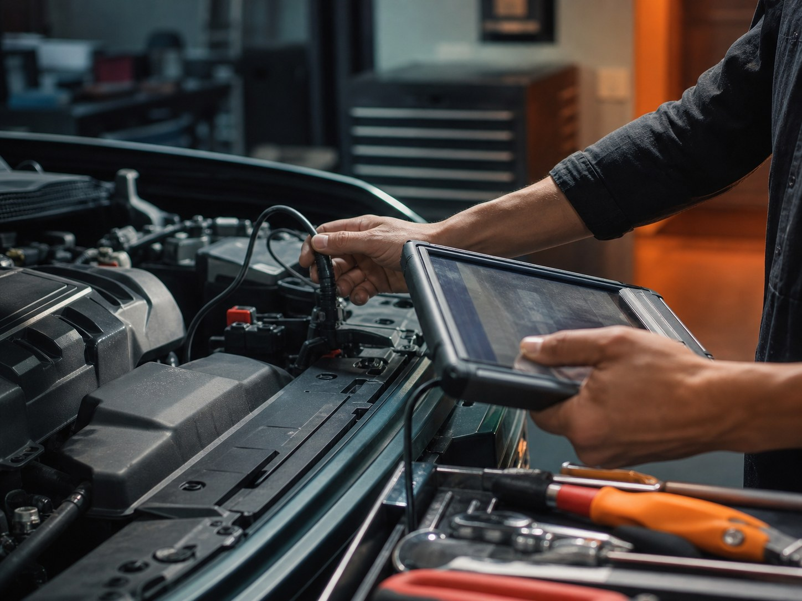
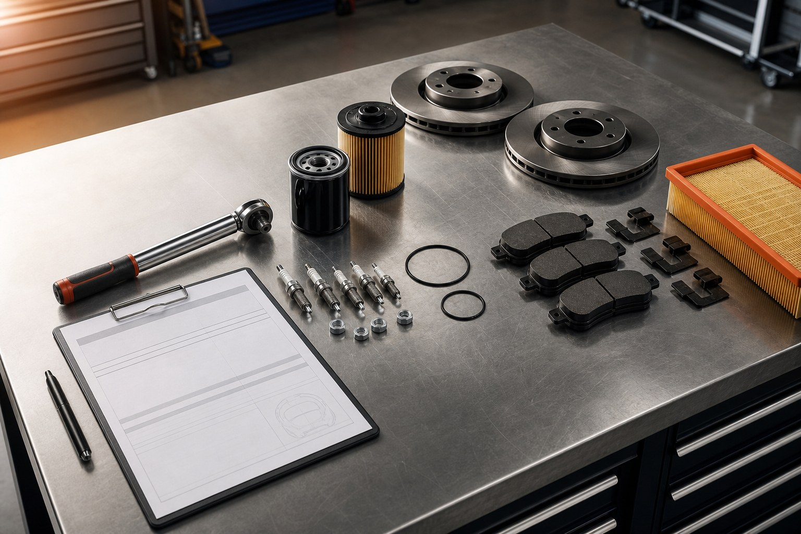

Страх переплаты
Дополнительные работы согласуются до начала. В отзывах клиенты отдельно отмечают, что лишнее не навязывают.

Домодедово • Ежедневно 09:00-20:00
ТО, диагностика, автоэлектрика, ходовая, двигатель, КПП, АКПП, кузовные и сварочные работы. Можно приехать со своими запчастями или заказать детали после согласования.
Контроль до ремонта
Визуальный акцент здесь не на обещании «дёшево», а на понятном процессе: проблему проверяют, список работ обсуждают, запчасти согласуют, лишнее не добавляют без звонка.
Дополнительные работы согласуются до начала. В отзывах клиенты отдельно отмечают, что лишнее не навязывают.
Сначала описываете проблему и проходите диагностику. После этого согласуются работы, детали и ориентир по стоимости.
У сервиса рейтинг 5,0 на Яндекс.Картах, 255 оценок и 118 отзывов. В карточке указана гарантия.
Можно приехать со своими запчастями или заказать нужные после согласования.

Порядок работ
Коротко описываете автомобиль, симптом и удобное время. Для срочных случаев быстрее звонить.
Мастер уточняет жалобы, проверяет машину и фиксирует, что нужно сделать сейчас, а что можно оставить в рекомендациях.
До ремонта обсуждаются работы, запчасти, срок и стоимость. Свои детали подходят, заказ деталей тоже возможен.
После работ вы забираете автомобиль, получаете пояснения по выполненному ремонту и дальнейшим рекомендациям.
Услуги
Выберите блок по симптомам автомобиля. Если не уверены, опишите проблему в заявке или позвоните мастеру.
Работы, с которых чаще всего начинают: быстро проверить состояние машины, заменить расходники и понять ближайшие рекомендации.
Для случаев, когда есть ошибка, машина не заводится, пропадает зарядка, не работает оборудование или нужен точный поиск причины.
Если появились стуки, вибрации, увод в сторону, скрипы, люфт руля или увеличился тормозной путь.
Работы по узлам, где особенно важны диагностика, согласование списка деталей и понятная последовательность ремонта.
Подходит при нестабильном запуске, провалах, повышенном расходе, ошибках по смеси или проблемах с подачей топлива.
Работы по кузову, выпускной системе и защите автомобиля от коррозии.
Запчасти и сроки
Это важный сценарий для клиентов, которые не хотят переплачивать или уже купили запчасти. Если деталей нет, сервис может помочь с заказом после согласования.

Нужна ли диагностика до заказа запчастей
Какие детали вы привозите сами
Какие работы нужно согласовывать отдельно
Как фиксируются рекомендации после ремонта
Автомобили
Отзывы
«Без согласования никаких допработ не производят». Клиент также отметил, что спрашивают о замечаниях по автомобилю.
«Ничего не навязывали, говорили по делу». Отдельно отмечены запчасти, зона ожидания и кофе.
Клиент пишет, что подвеску и колодки сделали быстро и качественно, а цены назвал демократичными.
Отметил, что приняли без очереди после поломки на трассе и оперативно помогли продолжить поездку.
Упоминает большую парковку, вежливый персонал и ситуацию, когда машину отдали после закрытия.
Пишет про полный спектр диагностики и ремонта, а также помощь с подбором и покупкой запчастей.
FAQ
Эти вопросы снимают основную неопределенность до звонка или визита.
Да. По отзывам и данным карточки, сервис может работать с вашими запчастями. Если деталей нет, их могут подобрать и заказать после согласования.
Ключевой тезис из отзывов: дополнительные работы не делают без согласования. На приемке лучше сразу попросить озвучивать все новые работы до ремонта.
По телефону можно получить ориентир, если вы опишете марку, модель, год, симптом и желаемую услугу. Точная стоимость зависит от диагностики, деталей и состояния узла.
Да, в карточке указана предварительная запись. Это особенно важно для диагностики, автоэлектрики, ремонта ходовой и работ с заказом запчастей.
В карточке указаны Wi-Fi, парковка и оплата картой. В отзывах клиенты также упоминают зону ожидания и кофе.
В карточке бизнеса указана гарантия. Условия гарантии лучше уточнить при записи и зафиксировать в заказ-наряде.
Запись и контакты
Для срочной поломки лучше звонить. Для планового ТО, диагностики или ремонта можно оставить заявку, и сервис уточнит детали.